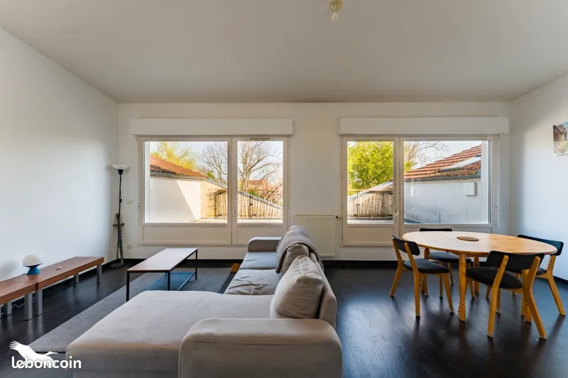
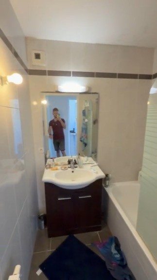
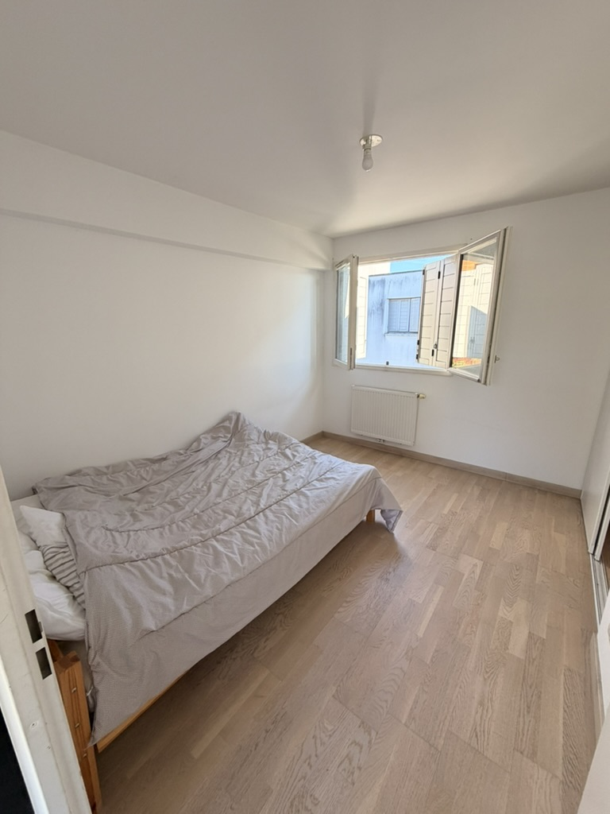
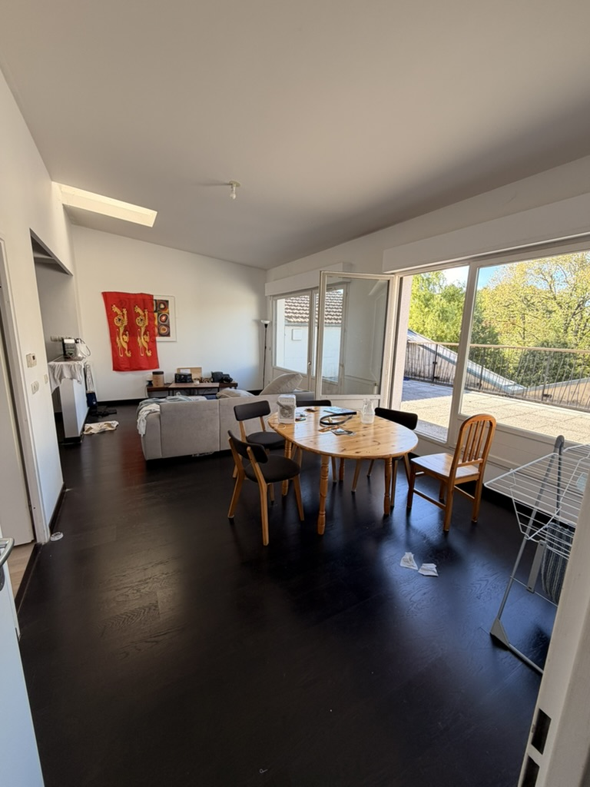
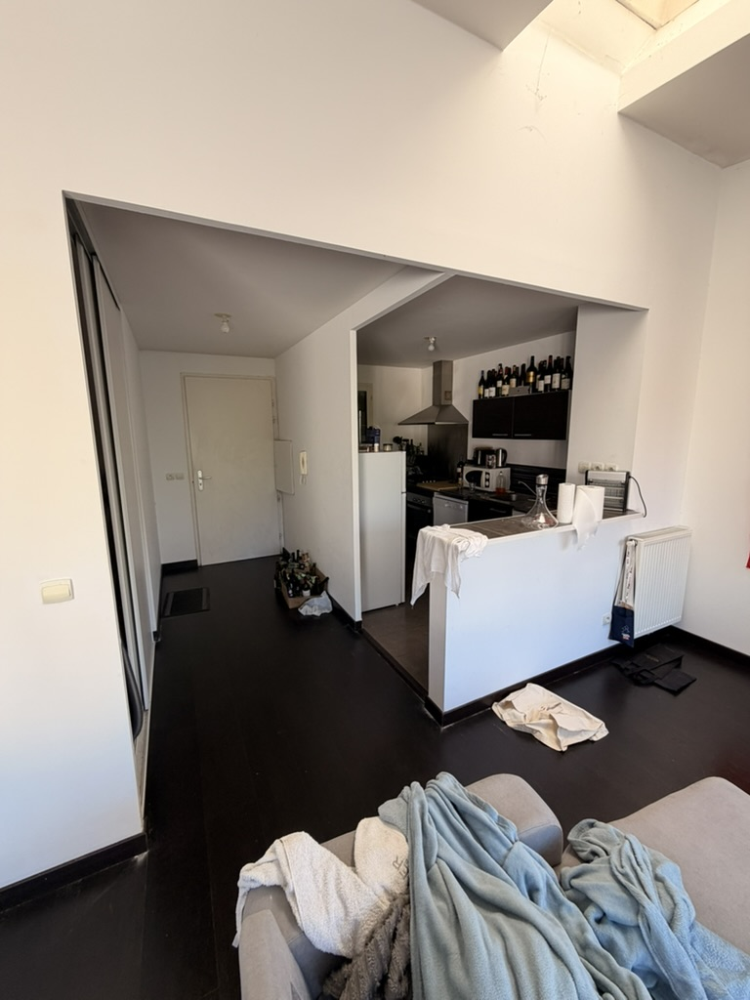
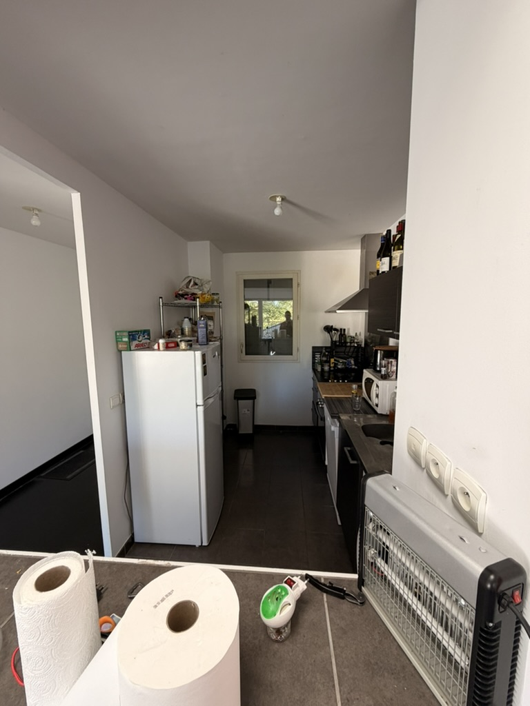
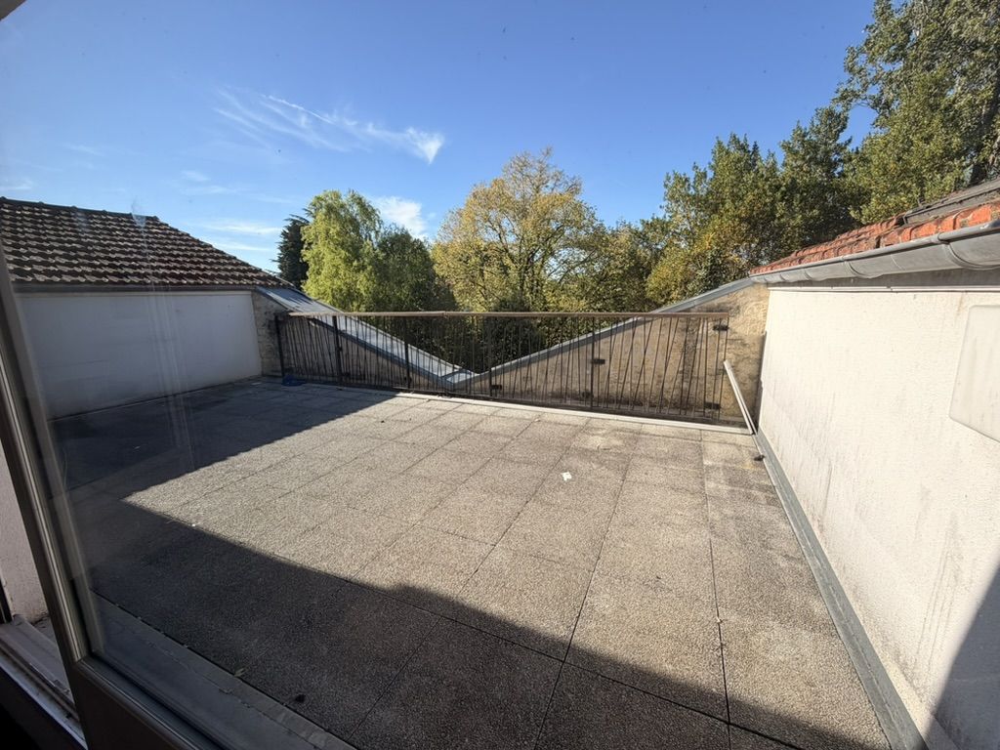

Appartement T4 avec terrasse parking et vue dégagée - Village Bacalan
Résidence Village Bacalan, quartier Bacalan - Bassins à Flot, à proximité des arrêts Tram B Rue Achard, Cité du Vin et Claveau, Bordeaux 33300

Informations
- Statut
- En cours
- Adresse
- Résidence Village Bacalan, quartier Bacalan - Bassins à Flot, à proximité des arrêts Tram B Rue Achard, Cité du Vin et Claveau, Bordeaux 33300
- Bien
- Appartement T4 avec terrasse parking et vue dégagée
- Vendeur
- HUMAN Immobilier
- Téléphone
- +33 5 56 04 00 55
- Date
- 2026-06-26
Description
Suivi
| Date | Historique |
|---|---|
| 2026-06-25 | RDV 25/06 fait pour expression de besoin chez Human. Visite 01/07 à la débauche |
Appartement de 4 pièces principales
Vue dégagée pour ce beau T4 situé dans la résidence Village Bacalan, bénéficiant d'une belle terrasse sans vis à vis, et d'une place de parking privative. Ce bien dispose d'une entrée avec placard, d'un salon salle à manger, d'une cuisine équipée, de 3 chambres, d'une sdb et wc. Proximité du tramway, commerces de proximité ! Honoraires à charge acquéreur : 5.04%
Référence annonce : 375-1501
Date de réalisation du diagnostic : 26/01/2026
Prix hors honoraires : 333 000 €
A propos de la copropriété :
Nombre de lots : 284
Charges prévisionnelles annuelles : 4636 €
Montant estimé des dépenses annuelles d'énergie pour un usage standard : entre 960 € et 1 350 € sur les années 2021, 2022 et 2023 (abonnements compris).
Photos de visite





